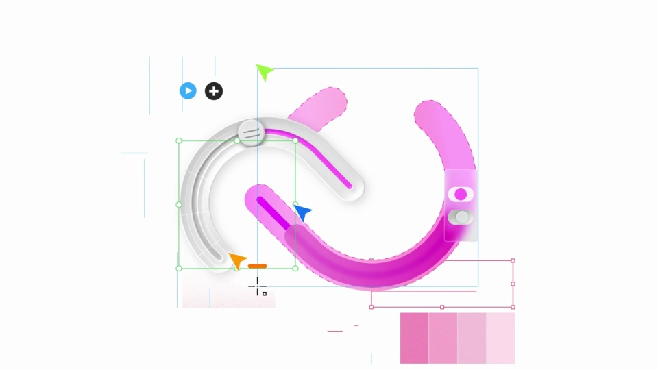
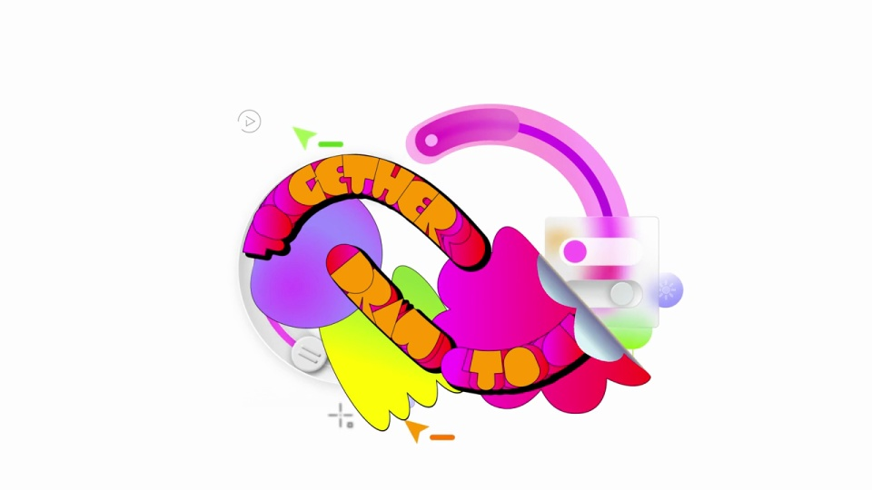
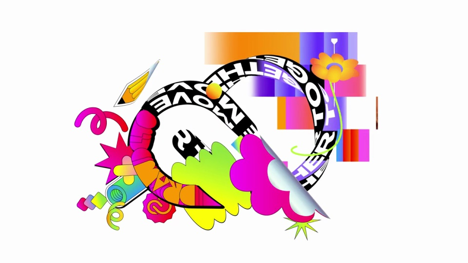
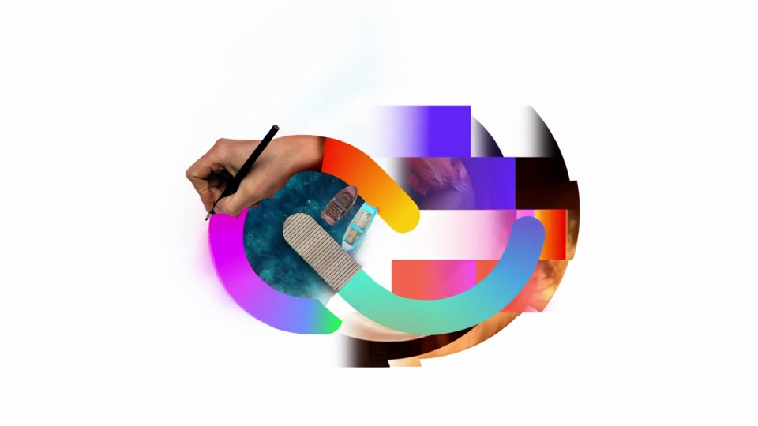
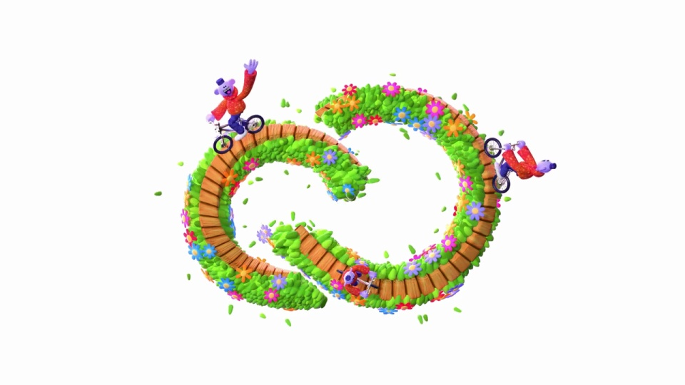

Adobe / V343
Creative Cloud｜标志主片
一条标志轮廓贯穿多种创作媒介：先是设计界面，再是涂鸦、图像和微景观。每次换材质都保留中心形状。
构图与编排 可播放 · 可替换内容
整体编排规则示例
查看 HTML 源码
<!doctype html><html lang="zh-CN"><meta charset="utf-8"><meta name="viewport" content="width=device-width,initial-scale=1"><title>Creative Cloud｜标志主片 · sequence</title><style>html,body{margin:0;width:100%;height:100%;overflow:hidden;background:#ffffff}canvas{display:block;width:100%;height:100%;object-fit:contain}</style><body data-mode="sequence"><canvas width="1000" height="600"></canvas><script src="data.js"></script><script src="common.js"></script><script src="scene.js"></script><script src="bridge.js"></script></body></html>画面元素标志弧线材质层外围装饰局部光泽编辑线框
MOTION LANGUAGE
动作与构图
局部动作 · 构图规则
01
先把标志当作设计中的对象
色条、选框和控制点围绕弧形逐步组装，网格与工具标签在外围。标志稳定后再让材质与装饰接管画面。
02
不同创作媒介沿同一轮廓交接
不同创作媒介沿同一轮廓交接规则示例
查看 HTML 源码
<!doctype html><html lang="zh-CN"><meta charset="utf-8"><meta name="viewport" content="width=device-width,initial-scale=1"><title>Creative Cloud｜标志主片 · sequence</title><style>html,body{margin:0;width:100%;height:100%;overflow:hidden;background:#ffffff}canvas{display:block;width:100%;height:100%;object-fit:contain}</style><body data-mode="clip" data-start="2.8" data-end="6.4"><canvas width="1000" height="600"></canvas><script src="data.js"></script><script src="common.js"></script><script src="scene.js"></script><script src="bridge.js"></script></body></html>涂鸦、摄影、立体景观可以完全换风格，但主轮廓的大小与重心保持接近。外围素材错开进入，换段时优先沿弧线擦除或接续。
03
最后沿轮廓拆开结束
景观轨道收缩、拆段、退出，让中心回到白场。换品牌时先设计一个在各种媒介中都能认出的基础剪影，再准备一组配套风格。
SEQUENCE
段落与节奏
点击段落，定位到上方编排示意。






画面参考 · 离散静帧
KEEP THE RELATIONSHIPS
制作其他主题
- 替换基础标志与风格素材组；保留相同重心、尺度与外围留白。
制作约束
标志弧线 / 材质层 / 外围装饰 / 局部光泽 / 编辑线框
- 色条、选框和控制点围绕弧形逐步组装，网格与工具标签在外围。标志稳定后再让材质与装饰接管画面。
- 涂鸦、摄影、立体景观可以完全换风格，但主轮廓的大小与重心保持接近。外围素材错开进入，换段时优先沿弧线擦除或接续。
- 景观轨道收缩、拆段、退出，让中心回到白场。换品牌时先设计一个在各种媒介中都能认出的基础剪影，再准备一组配套风格。